Introduction
Welcome to the generalizeR! This package is designed to guide education researchers through:
- Using important features of their inference population to stratify units
- Developing a recruitment plan for a future evaluation
- Assessing the generalizability of a completed evaluation
Note that it is possible to use the package at either end of the sampling process: you can start at the beginning and use the package to obtain a stratified sample, or you can start at the end with your previously obtained sample data and assess its generalizability.
Step 1: Stratify
The stratify() function defaults to ‘guided’ mode,
meaning that it prints text throughout and prompts the user to enter
information with a question-and-answer format. This is intentional, in
part to mimic the nature of http://thegeneralizer.org/ and in part because we intend
for this R package to be as accessible as possible for people with
limited R experience.
Users who are running stratify() multiple times, who are
familiar with R, or who simply dislike the guided feature can turn it
off by using the argument ‘guided = FALSE’. If they do so, however, they
must be sure to specify values for all the other function arguments, as
those would otherwise be obtained from user input later.
This tutorial will follow a hypothetical example.
Filtering the Inference Population
Suppose we are a team of education researchers who want to test the effect of an intervention on SAT scores. We have somewhat limited resources, so we plan on using a sample size of 40 schools. We want to estimate the average effect of our intervention in Texas charter high schools. Thus, our inference population consists of all Texas charter high schools. Previous literature suggests that gender, minority status, and social class might affect gaps in achievement, so we select a few stratifying variables – percentage female, percentage black, and percentage free and reduced lunch. We also think school size might result in treatment differences, so we include the total school size as well.
Since we are working with high schools, we can use the Common Core
database provided in ‘generalizeRdata’. For information on each of the
columns and the source of the data, run ?cc.
cc## # A tibble: 98,563 × 43
## ncessch sch_name st mstreet1 mcity phone website lea_name sch_type
## <dbl> <chr> <chr> <chr> <chr> <chr> <chr> <chr> <int>
## 1 10000500870 Ala Avenue … AL 600 E A… Albe… (256… http:/… Albertv… 1
## 2 10000500871 Albertville… AL 402 E M… Albe… (256… http:/… Albertv… 1
## 3 10000500879 Evans Elem … AL 901 W M… Albe… (256… http:/… Albertv… 1
## 4 10000500889 Albertville… AL 1100 Ho… Albe… (256… http:/… Albertv… 1
## 5 10000501616 Big Spring … AL 257 Cou… Albe… (256… http:/… Albertv… 1
## 6 10000502150 Albertville… AL 1100 Ho… Albe… (256… http:/… Albertv… 1
## 7 10000600193 Kate Duncan… AL 6077 Ma… Grant (256… http:/… Marshal… 1
## 8 10000600872 Asbury Sch AL 1990 As… Albe… (256… http:/… Marshal… 1
## 9 10000600876 Claysville … AL 140 Cla… Gunt… (256… http:/… Marshal… 1
## 10 10000600877 Douglas Ele… AL P O Box… Doug… (256… http:/… Marshal… 1
## # ℹ 98,553 more rows
## # ℹ 34 more variables: g_pk_offered <chr>, g_kg_offered <chr>,
## # g_1_offered <chr>, g_2_offered <chr>, g_3_offered <chr>, g_4_offered <chr>,
## # g_5_offered <chr>, g_6_offered <chr>, g_7_offered <chr>, g_8_offered <chr>,
## # g_9_offered <chr>, g_10_offered <chr>, g_11_offered <chr>,
## # g_12_offered <chr>, level <chr>, leaid <int>, charter <dbl>,
## # titlei_status_text <chr>, magnet_text <chr>, nslp_status <chr>, …By looking at the st column, we can already see a
problem here. The data frame contains schools from all states in the US,
but we are interested in a much narrower inference population.
Therefore, there is some filtering we must do first.
To identify Texas schools, we can select those rows with
st equal to TX:
inference_pop <- cc %>%
filter(st == "TX")To filter out the non-charter schools, we can use the variable in our
data frame called charter that takes on the value of 0 for
non-charter schools and 1 for charter schools. Finally, to select high
schools (which almost always include grades 9 to 12), we can use one of
the grade indicator variables, say g_10_offered. After
combining all of these filters, we get:
inference_pop <- cc %>%
filter(st == "TX") %>%
filter(charter == 1) %>%
filter(g_10_offered == "Yes")
inference_pop## # A tibble: 330 × 43
## ncessch sch_name st mstreet1 mcity phone website lea_name sch_type
## <dbl> <chr> <chr> <chr> <chr> <chr> <chr> <chr> <int>
## 1 480000407173 POR VIDA A… TX 1135 MI… SAN … (210… "http:… POR VID… 4
## 2 480000409116 CORPUS CHR… TX 1135 MI… SAN … (361… "http:… POR VID… 4
## 3 480000409460 CESAR E CH… TX 3701 MU… CORP… (361… "http:… POR VID… 4
## 4 480001407174 GEORGE GER… TX 6944 SU… SAN … (210… "" GEORGE … 4
## 5 480001607239 DALLAS CAN… TX 4621 RO… DALL… (214… "http:… TEXANS … 4
## 6 480001607847 DALLAS CAN… TX 325 W 1… DALL… (214… "http:… TEXANS … 4
## 7 480001607910 HOUSTON CA… TX 325 W 1… DALL… (214… "http:… TEXANS … 4
## 8 480001608434 SAN ANTONI… TX 325 W 1… DALL… (210… "http:… TEXANS … 4
## 9 480001608908 FORT WORTH… TX 6220 WE… FORT… (817… "http:… TEXANS … 4
## 10 480001609028 FORT WORTH… TX 325 W 1… DALL… (817… "http:… TEXANS … 4
## # ℹ 320 more rows
## # ℹ 34 more variables: g_pk_offered <chr>, g_kg_offered <chr>,
## # g_1_offered <chr>, g_2_offered <chr>, g_3_offered <chr>, g_4_offered <chr>,
## # g_5_offered <chr>, g_6_offered <chr>, g_7_offered <chr>, g_8_offered <chr>,
## # g_9_offered <chr>, g_10_offered <chr>, g_11_offered <chr>,
## # g_12_offered <chr>, level <chr>, leaid <int>, charter <dbl>,
## # titlei_status_text <chr>, magnet_text <chr>, nslp_status <chr>, …The size of our inference population has dropped from over 98,000 schools to about 350 schools. It now only includes Texas charter high schools (or schools that offer 10th grade).
Running the Function
We are now ready to run stratify() on our inference
population. We enter:
output <- stratify(data = inference_pop)We are greeted with the following:
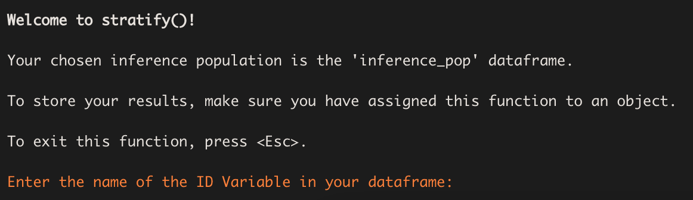
Selecting the ID Variable
The above prompt requires us to enter the name of the ID variable we
wish to use. We enter the name of the column that contains the unique
NCES school IDs in the CCD database – ncessch.
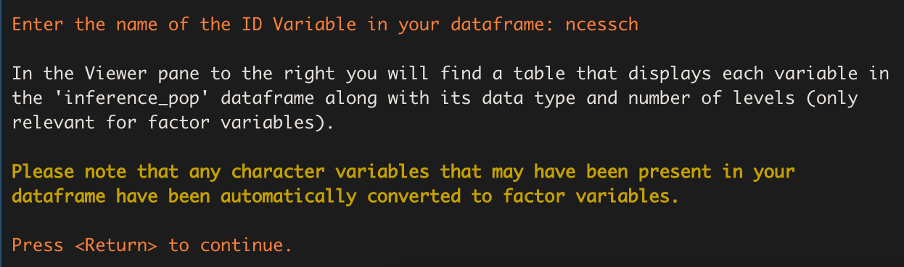
We then receive a message informing us that stratify()
has converted all the character variables in our data frame to factor
variables. This means some factor variables will have a large number of
levels if their original character versions had many distinct
observations. We are also told a table displaying an overview of the
variables in our data frame has been printed in the Viewer pane. A
preview of that same table is shown below. In general, whenever a table
is printed to the console, there will be one printed in the Viewer pane
as well.
| Variable | Type | Levels |
|---|---|---|
| sch_name | factor | 329 |
| st | factor | 1 |
| mstreet1 | factor | 244 |
| mcity | factor | 84 |
| phone | factor | 307 |
| Note: | ||
| Only the first 5 rows of the table are shown in this tutorial. |
Selecting the Stratification Variables
Next we receive a prompt asking us to select our stratification
variables and a menu showing us all the variables available in our
dataset. We are also given a warning that we must select at least two
variables and we can’t choose any factor variable containing more than 4
levels. These restrictions are put in place to prevent errors and ensure
the stratification process goes smoothly. If we wish to use a factor
variable with more than 4 levels for stratification, we must first exit
stratify() and re-code our desired factor levels from that
variable as indicator variables within our data frame (the package
fastDummies may be of use).

For our stratifying variables of interest, we have chosen
pct_female, pct_black_or_african_american,
pct_free_and_reduced_lunch, and total. We
enter: 29 32 38 42. The function prints out a list of these
variables with their names highlighted in blue, as well as a table
displaying each variable’s type and number of levels. This is done so we
can look them over, confirm what we selected, and make sure the
variables are the types we expected. Since these results seem
reasonable, we indicate that they are correct by entering
1.
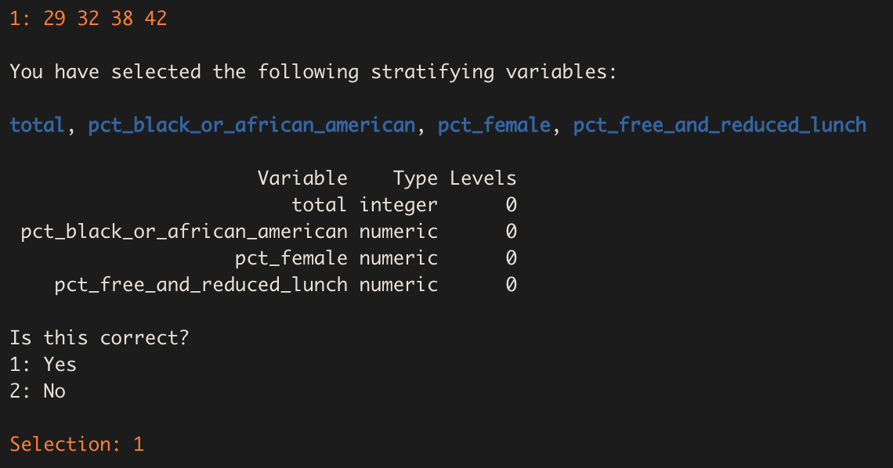
Missing Observations
We are now shown a table (also available in the Viewer pane) that
breaks down how many missing observations each variable contains,
including our id variable ncessch. These observations will
be dropped from the inference population before the stratification is
performed.
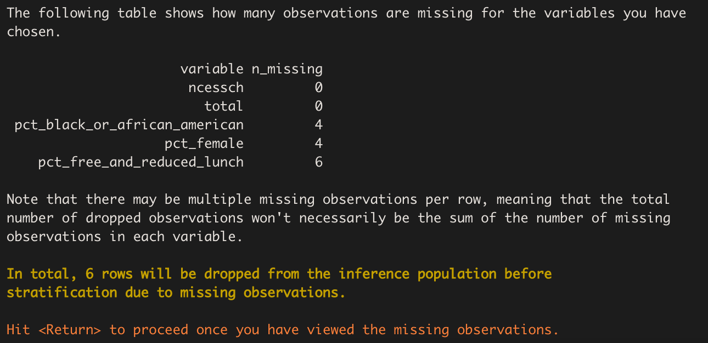
Descriptive Statistics
Next, the function prints out the descriptive statistics of the stratification variables chosen, both categorical and continuous. In this case, all the variables are continuous. Plots of the variables – histograms or bar charts, as appropriate – are generated and displayed one at a time.
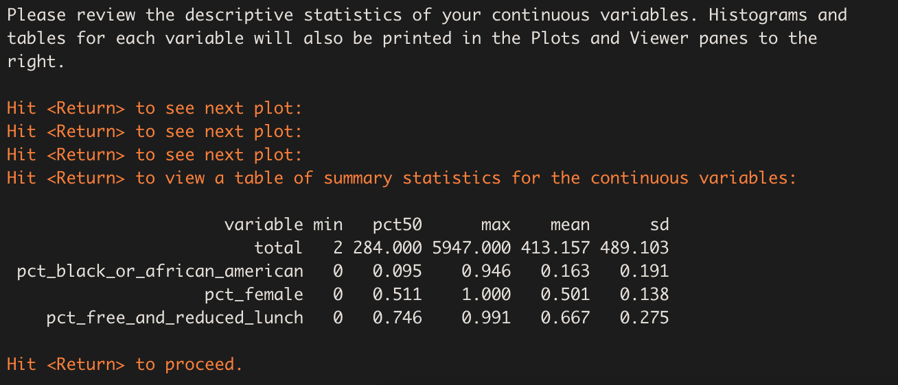
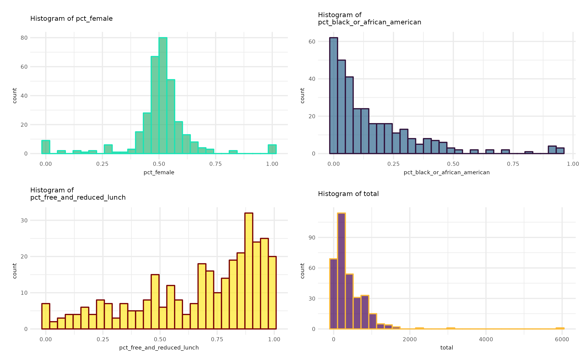
Choosing the Number of Strata
Now we are ready to choose the number of strata in which to divide
our population. stratify() prints some information, similar
to that presented by the Generalizer Web application,
explaining what the choice represents and giving us some guidance. While
choosing more strata is generally better in terms of generalizability,
the practical demand placed on the sampling process increases with the
number of strata, because units must be sampled from each stratum.
Since we are only planning on using a sample size of 40 schools, we’ll try a smaller number – 4 strata:
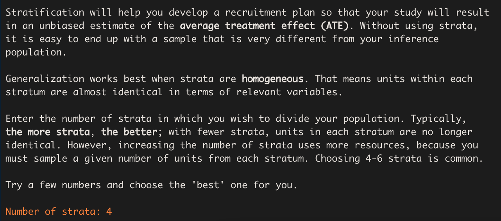
The process of stratifying can take some time. If the function were to run silently, users might fear that R had frozen and quit. As a sort of progress bar, we have turned on “verbose” mode for the clustering process, which prints out the within-cluster sum of squares at each iteration until the stratifying process converges:
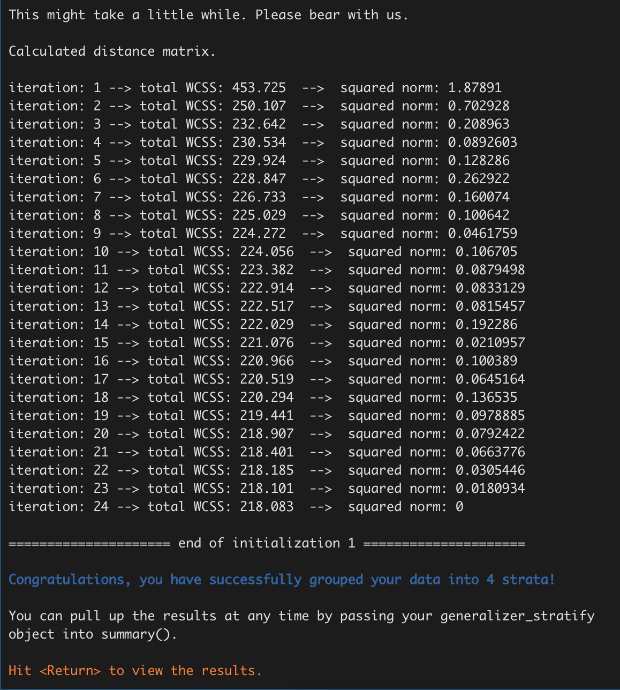
Understanding the Results
Stratification Review
The results begin with a brief review of the stratification process. We are informed of the stratification variables, the observations dropped due to missing data, the population size (after missing observations have been dropped), the number of strata, and the proportion of variation in the population explained by the strata. In this case, that proportion was about 66%. Increasing the number of strata would increase the percentage explained and result in more homogeneous strata but would also require more resources during study implementation.
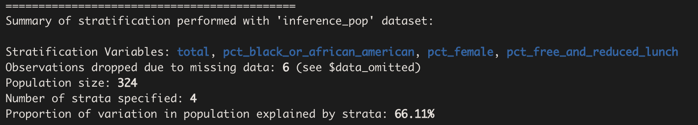
Covariate Statistics
stratify() then provides us with a table of the
within-stratum means and standard deviations for each of the stratifying
variables, as well as a count of the total number of units in each
stratum.
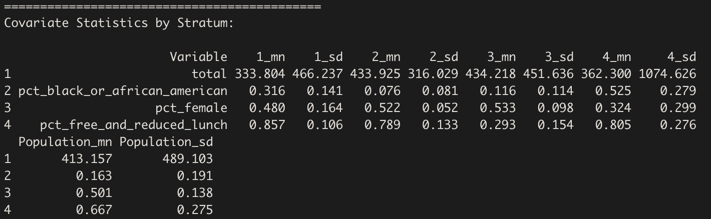
A similar table is printed in the Viewer pane:
| Variable | Mean | Standard Deviation | Mean | Standard Deviation | Mean | Standard Deviation | Mean | Standard Deviation | Mean | Standard Deviation |
|---|---|---|---|---|---|---|---|---|---|---|
| total | 333.804 | 466.237 | 433.925 | 316.029 | 434.218 | 451.636 | 362.300 | 1074.626 | 413.157 | 489.103 |
| pct_black_or_african_american | 0.316 | 0.141 | 0.076 | 0.081 | 0.116 | 0.114 | 0.525 | 0.279 | 0.163 | 0.191 |
| pct_female | 0.480 | 0.164 | 0.522 | 0.052 | 0.533 | 0.098 | 0.324 | 0.299 | 0.501 | 0.138 |
| pct_free_and_reduced_lunch | 0.857 | 0.106 | 0.789 | 0.133 | 0.293 | 0.154 | 0.805 | 0.276 | 0.667 | 0.275 |
Heat Map
The function also prints a heat map:
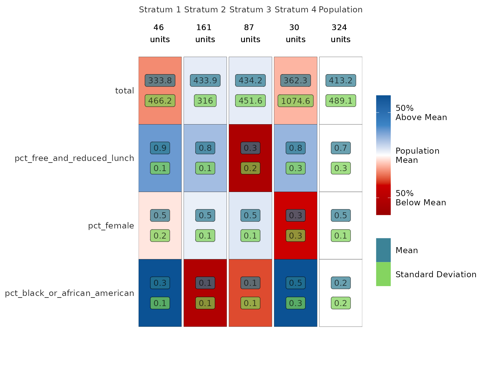
Each column of the heat map corresponds to a stratum. We can read the map by going down the columns, assessing each stratum in relation to the population. Remember that the goal is to sample independently within each stratum in order to obtain a sample that is representative of the population as a whole. To that end, each stratum has been made as homogeneous as possible within itself (i.e. the within-stratum variances have been minimized) while also maintaining as much heterogeneity as possible across strata (i.e. the between-stratum variance has been maximized).
Looking at the first column, we see that Stratum 1 contains 161 Texas charter high schools. These schools are:
- close to the population mean in number of students (about 430),
- above the population mean in the percentage of students on free or reduced lunch (80%),
- close to the population mean in percentage of female students (50%),
- and below the population mean in percentage of black students (10%).
The other columns may be interpreted in exactly the same manner.
(Users may wonder why the shade of red for the bottom left and bottom right cells differs when both seem to have a mean of 10%. This is because of the scale of the variable, the size of the population mean, and rounding.)
Summary and Print
If we wish to look at the results of stratify() again,
we can run the following code:
summary(strat_output)Note that output is the name we have assigned to our
stratify_object in this example; users should replace it
with their own name they have chosen.
There is also an option to print our stratify_object.
Doing so yields:

We have finished the stratifying process!
Step 2: Recruit
Now that we have separated our inference population into 4 strata,
our next goal is to sample units from each stratum in such a way that
the overall sample will be representative of the entire population. We
can accomplish this task using the recruit() function.
Like stratify(), recruit() is guided by
default; we can simply set guided = FALSE to turn this
option off if we choose, but we must specify values for the other
function arguments instead.
Since we assigned the results of stratify() to an
object, that object can then be passed directly into
recruit(), like so:
rec_output <- recruit(strat_output)We are immediately greeted with the following welcome message:
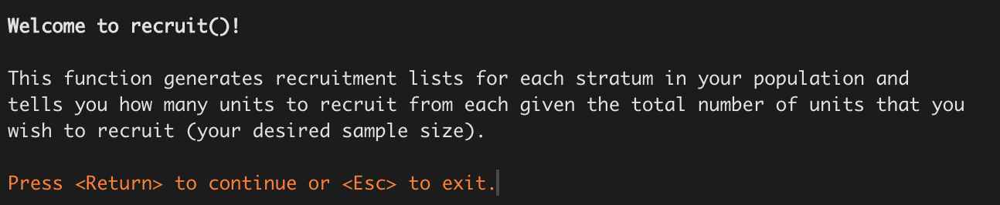
After pressing the return key, we see:
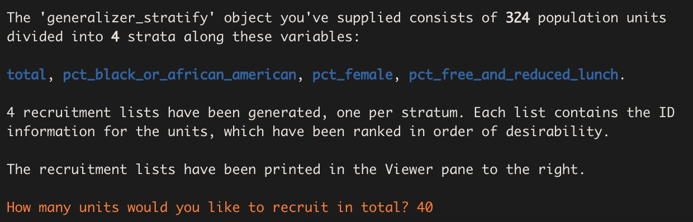
Our desired sample size is 40 schools, so we enter ‘40’ for the number of units we wish to recruit. The function then generates a recruitment list for each stratum. Each row in a stratum’s recruitment list corresponds to a different unit in the stratum, and the units have been ranked in ascending order of their Mahalanobis distances from the mean vector of the stratifying variables. The idea is that the units with the smallest Mahalanobis distances are most likely to be “representative” of the population and so should be chosen first to be part of the sample.
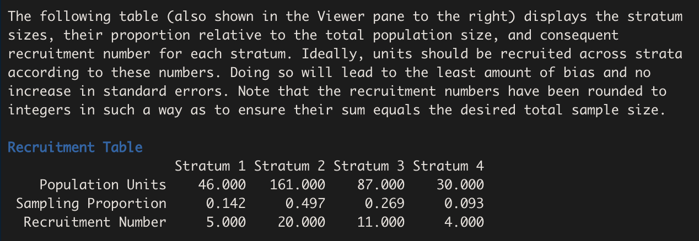
Next, the function prints a recruitment table that tells us how many units we should recruit from each stratum. It arrives at these numbers by multiplying the sampling proportion (which is equal to the ratio of the stratum size to the total population size) for each stratum by the desired sample size, in this case 40.
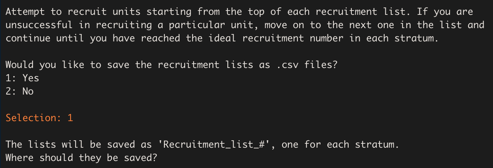
This means that our recruitment plan should be to recruit 20 schools from Stratum 1, 4 from Stratum 2, 5 from Stratum 3, and 11 from Stratum 4.
The function then asks us if we want to save the recruitment lists as csv files. 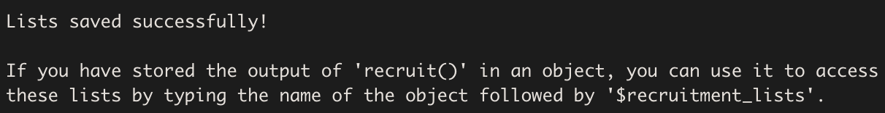
Upon entering ‘1’ to indicate ‘Yes’, a folder selection widget will
appear that will allow us to choose a location on our computer in which
to save the lists. Note that this only occurs when using the guided
version of the function; in the non-guided version, the lists are
automatically saved to our working directory if we set
save_as_csv = TRUE.
Lastly, the function reminds us that the recruitment lists can also be accessed from its output, provided that it has been stored in an object.
We have finished the recruitment process!
Step 3: Assess
assess()
We are now ready to take the results we obtained from
stratify() and recruit() and use them to
assess() the generalizability of our sample data to the
population.
The generalizer index is a global measure of similarity between the sample and population for a defined set of covariates (between 0 and 1). Can multiply by 100: 0.8 -> 80% similar.
assess_wrap()
We have taken our four recruitment lists and successfully recruited the desired number of units from each stratum: 20, 4, 5, and 11 units from strata 1, 2, 3, and 4, respectively. We have completed their study and are now interested in whether our results are generalizable to other states in the US.
Recall that our inference population consisted of Texas charter high schools. Therefore, it is reasonable to wonder whether our sample can generalize to other charter high schools in the US.
First we must specify the variables that we hope are generalizable. These are the same variables we first used to stratify the population.
selection_vars <- c("pct_female", "pct_black_or_african_american", "pct_free_and_reduced_lunch", "total")Then we must read in our sample. There are multiple ways to accomplish this, but the important thing is to create a data frame consisting only of the units we have recruited from the population with a column containing the sample IDs. In this example, we will build the data frame from the four recruitment lists we generated earlier.
sample <- tibble(ncessch = c(rec_output$recruitment_lists[[1]]$ncessch[1:20],
rec_output$recruitment_lists[[2]]$ncessch[1:4],
rec_output$recruitment_lists[[3]]$ncessch[1:5],
rec_output$recruitment_lists[[4]]$ncessch[1:11]))They specify their inference population again – this time a data frame including all states with and without charter high schools. The data frame should include unit IDs, variables of interest, and (if applicable) a grouping variable; since the researcher wants to generalize to US states, the grouping variable is ‘st’ (state).
inference_pop <- cc %>%
filter(charter == 1) %>%
filter(g_10_offered == "Yes") %>%
select(ncessch, all_of(selection_vars), st)Finally, they feed their sample and populatiuon data frames, the name of the ID variable, and the name of the grouping variable to ‘assess_wrap()’ – a wrapper of the included ‘assess()’ function for ease of use.
They can view a table of their results across states. This code extracts the ‘st’ variable as a factor and retains unique values, one row per state:
Then that information is bound together with the generalizability indexes:
However, the information is easier to assess in the form of a map. There are many mapping tools in R. First, we use the tidyverse to turn the generalizability index values into a categorical variable representing the three levels of generalizability.
A G-index above 0.90 means that the sample is equivalent to a randomized trial. A G-index between 0.50 and 0.90 means that the sample is not quite a miniature of the population, but statistical adjustments to reweight the sample may make generalization possible. Finally, a G-index below 0.50 means that generalization (based upon the selected covariates) is completely unwarranted, and statistical adjustment cannot help.
This map tells the researcher a few things.
Their results are equivalent to a randomized controlled trial for generalizations to charter high schools in California and Texas. Texas is to be expected here, since their entire sample came from Texas. California most likely has a charter high school population that is very similar to Texas in terms of the stratifying variables (pct_female, pct_black_or_african_american, pct_free_and_reduced_lunch, and total number of students).
With statistical adjustments, they could make generalizations to the populations of charter high schools in: Washington, Nevada, Utah, Arizona, Colorado, Kansas, Oklahoma, Minnesota, Indiana, Wisconsin, Michigan, Ohio, Pennsylvania, New York, Connecticut, North and South Carolina, Georgia, Florida, and Arkansas.
Generalizations to the remaining states would be completely unwarranted; in some cases this is because there are no charter high schools in the state (labeled ‘NA’).
This researcher had a sample size of only 40, but based on careful, stratified sampling (and with some adjustment), they should be able to generalize their intervention results to the populations of 22 US states.